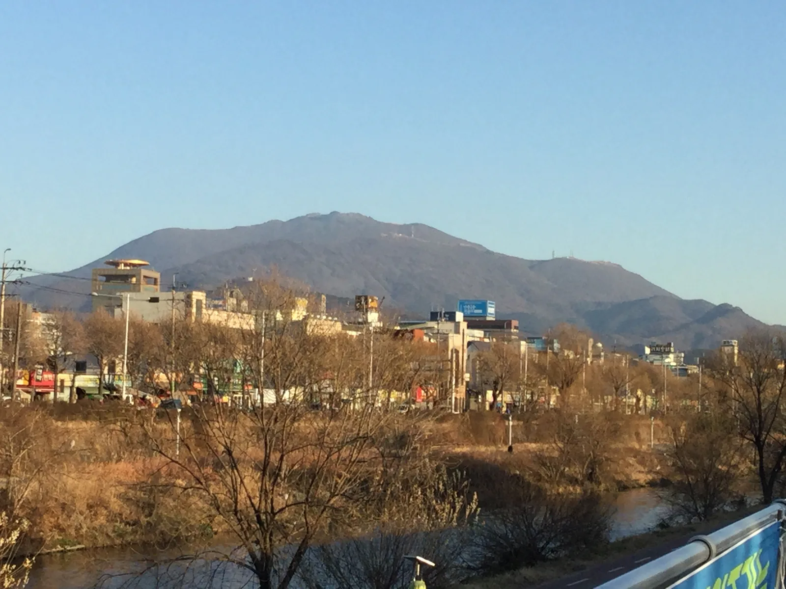
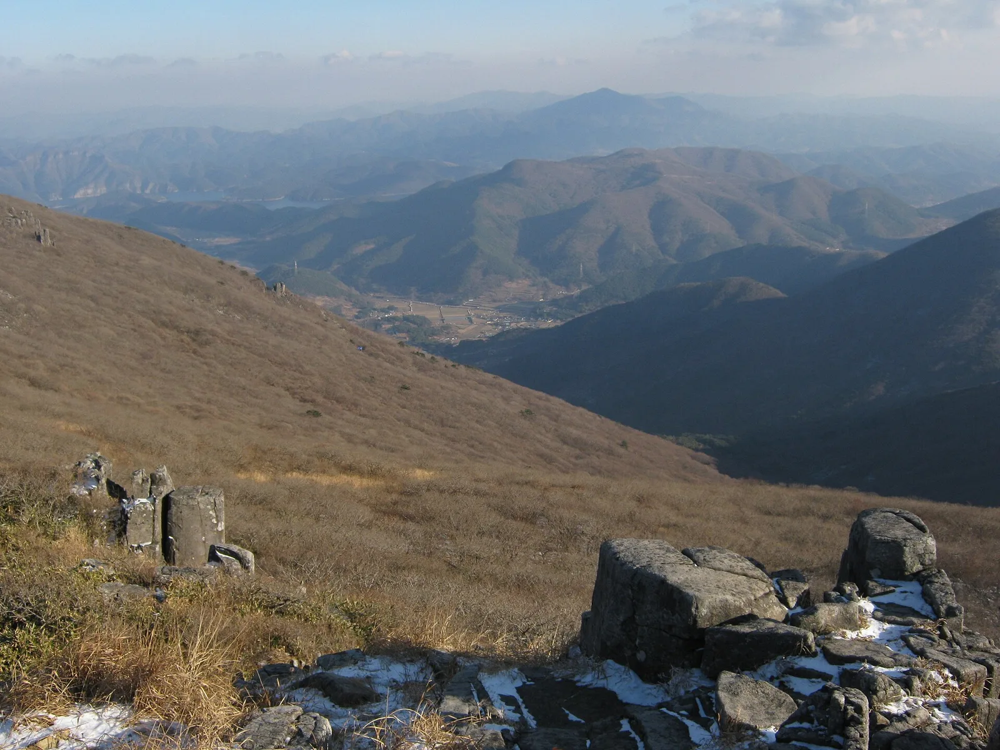
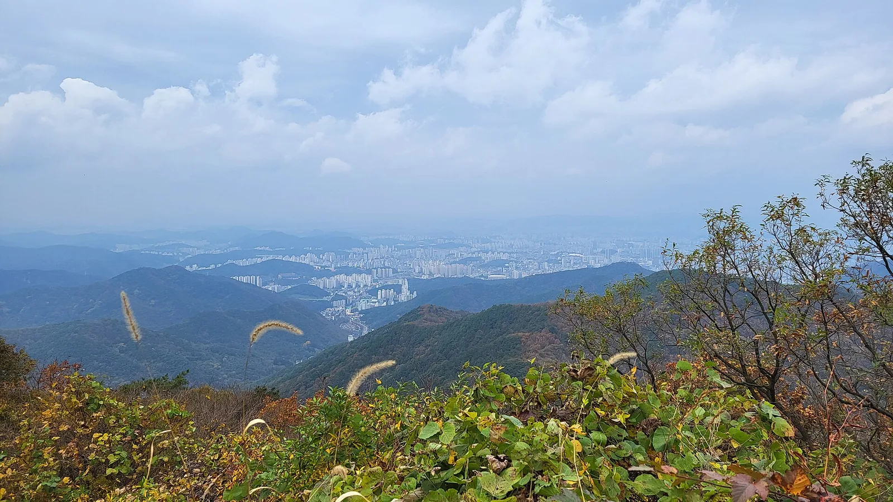
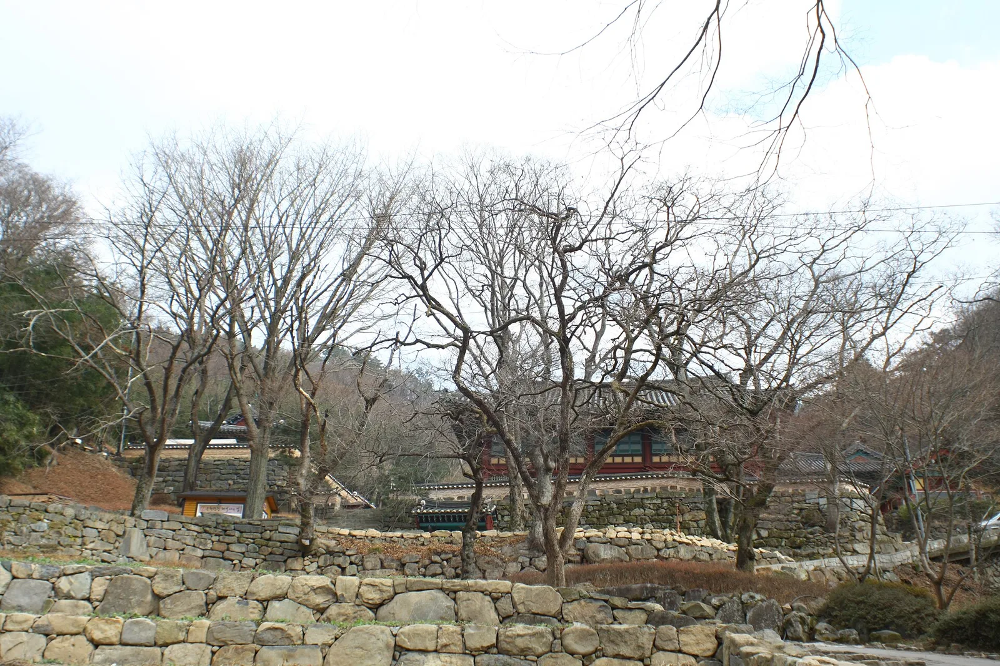
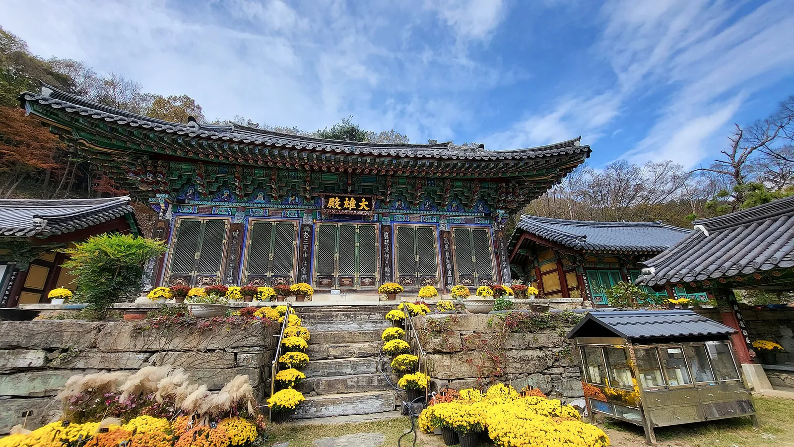
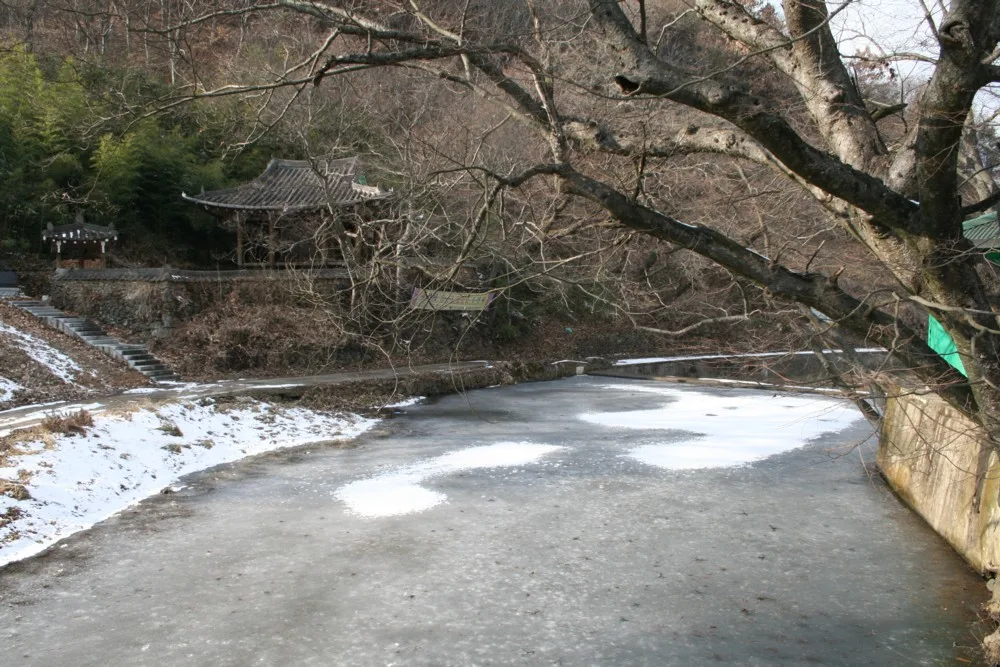
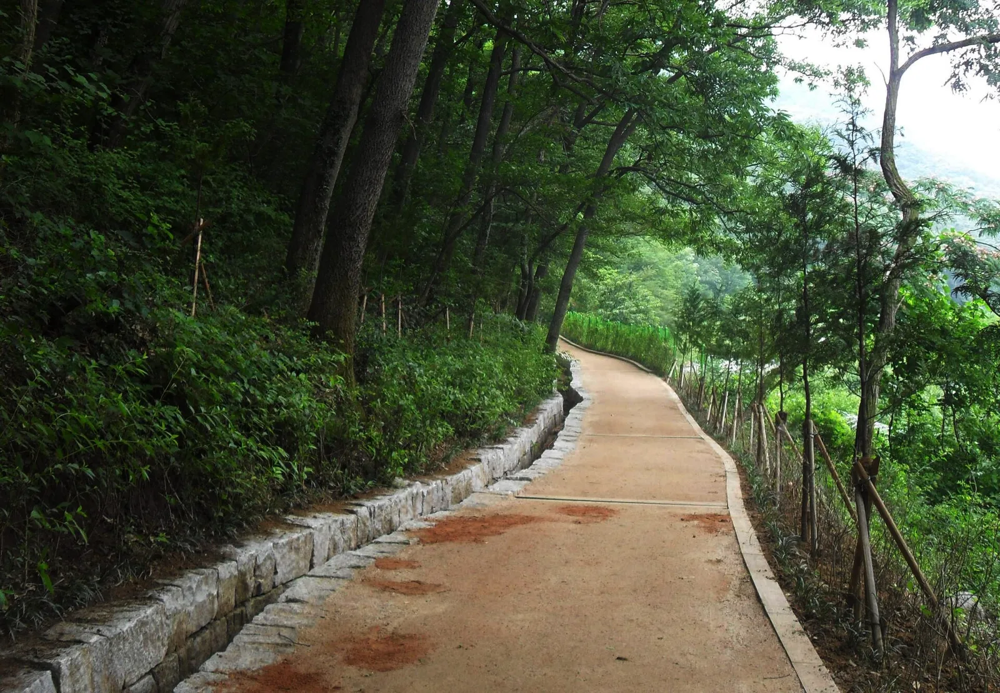

▲ 무등산 정상부 주상절리대. 다각형 돌기둥이 병풍처럼 늘어선 서석대·입석대와 같은 계열의 지형이다 ⓒ Wikimedia Commons
광주광역시 도심에서 차로 30분 거리, 무등산은 2013년 국내 21번째 국립공원으로 지정된 도심형 국립공원이다. 최고봉 천왕봉은 1,187m로 호남에서 손꼽히는 높이지만, 진짜 명물은 정상 부근 서석대·입석대의 주상절리대다. 다각형 돌기둥이 병풍처럼 늘어선 이 지형은 2005년 천연기념물 제465호로 지정됐다. 9월 중순인 지금은 초록빛이 완연하지만, 예년 기준 10월 하순~11월 초 단풍철이면 억새와 붉은 단풍, 회색 돌기둥이 어우러진 무등산 특유의 가을 풍경이 펼쳐진다.

▲ 광주 도심에서 바라본 무등산 전경. 도심 어디서나 산의 윤곽이 보일 만큼 접근성이 뛰어나다 ⓒ Wikimedia Commons
1. 서석대·입석대 — 천연기념물 무등산 주상절리대
서석대(해발 1,050m)와 입석대(해발 950m)는 무등산 정상 능선을 따라 자리한 대표적인 주상절리 지형이다. 서석대는 높이 약 30m, 너비 1~2m의 다각형 돌기둥 200여 개가 마치 병풍처럼 늘어서 있고, 입석대는 동서로 약 120m에 걸쳐 40여 개의 돌기둥이 촛대처럼 곧게 솟아 있다. 두 지형 모두 무등산이 화산 활동으로 형성됐음을 보여주는 지질학적 증거로, 규봉과 함께 '무등산 주상절리대'라는 이름으로 천연기념물 제465호에 지정돼 있다.

▲ 무등산 정상 능선에서 내려다본 풍경. 억새 능선 너머로 계곡과 저수지가 겹겹이 펼쳐진다 ⓒ Wikimedia Commons
정상부인 천왕봉·지왕봉·인왕봉 3봉은 군 통신시설이 있어 상시 통제되며, 국립공원공단이 지정한 특정 기간에만 제한적으로 개방 행사를 연다. 일반 탐방객은 서석대·입석대까지만 올라도 정상급 조망을 충분히 누릴 수 있다.
2. 증심사·원효사 코스 — 광주 도심에서 가장 가까운 국립공원 탐방로

▲ 무등산 능선에서 내려다본 광주 도심. 도심 접근성이 뛰어나 반나절 산행으로도 충분히 다녀올 수 있다 ⓒ Wikimedia Commons
가장 대중적인 코스는 광주 동구 증심사지구에서 출발해 중머리재, 장불재를 지나 입석대·서석대로 오르는 길이다. 편도 약 6km, 왕복 5~6시간이 소요되며 완만한 흙길과 돌길이 번갈아 이어져 초보자도 도전할 만하다. 북구 원효사지구에서 출발하는 코스는 규봉암을 함께 둘러볼 수 있어 원효사~장불재~서석대로 이어지는 코스도 인기가 많다.
| 코스 | 구간 | 거리(편도) | 소요시간(왕복) | 난이도 |
|---|---|---|---|---|
| 증심사 코스 | 증심사 - 중머리재 - 장불재 - 입석대 - 서석대 | 약 6km | 5~6시간 | 중 |
| 원효사 코스 | 원효사 - 꼬막재 - 장불재 - 서석대 | 약 6.5km | 5~6시간 | 중 |
| 규봉 연계 코스 | 원효사 - 규봉암 - 장불재 - 입석대·서석대 | 약 7km | 6~7시간 | 중~상 |
3. 증심사·원효사 — 무등산 자락의 천년 고찰

▲ 무등산 증심사. 통일신라 헌안왕 대(860년 무렵) 철감선사가 창건한 것으로 전해지는 고찰이다 ⓒ Wikimedia Commons
증심사는 대한불교조계종 제21교구 본사 송광사의 말사로, 증심사지구 등산로 초입에 자리해 탐방객 대부분이 거쳐 가는 사찰이다. 오백전, 삼층석탑 등 전각과 문화재가 남아 있다.

▲ 무등산 원효사 대웅전. 통일신라 승려 원효대사가 창건한 것으로 전해지며 가을에는 국화로 경내를 단장한다 ⓒ Wikimedia Commons
원효사는 북구 원효사지구 등산로 초입에 있으며, 원효대사가 창건했다는 설화가 전해진다. 두 사찰 모두 2023년 국가지정문화재 관람료 폐지 정책에 따라 별도 문화재 관람료 없이 둘러볼 수 있다.

▲ 무등산 자락의 연못과 정자. 계절에 따라 다른 표정을 보여주는 쉼터로, 등산로 중간 휴식 지점으로도 이용된다 ⓒ Wikimedia Commons
4. 교통·주차·개방시간 정보

▲ 무등산 옛길(다님길) 구간. 완만한 경사의 포장로가 이어져 가벼운 산책 코스로도 인기가 있다 ⓒ Wikimedia Commons
| 항목 | 내용 |
|---|---|
| 국립공원 지정 | 2013년 3월(21번째 국립공원) |
| 최고봉 | 천왕봉 1,187m(정상 3봉은 상시 통제) |
| 주상절리대 | 서석대 1,050m·입석대 950m, 천연기념물 제465호 |
| 주요 탐방기점 | 증심사지구(광주 동구), 원효사지구(광주 북구), 안양산지구(화순) |
| 입장료 | 무료(국립공원 입장료 전면 폐지) |
| 정상 3봉 개방 | 군 통제구역, 국립공원공단 공지에 따라 제한적 개방행사 진행 |
| 주차 | 증심사·원효사 지구 공영주차장, 단풍철 주말 혼잡 |
증심사지구는 광주 도심에서 시내버스로도 접근이 가능해 대중교통 이용자에게도 편리하다. 원효사지구는 자가용 접근이 편리하며, 단풍철 주말에는 오전 일찍 방문하는 것이 좋다.
5. 무등산 서석대·입석대 가을 산행, 가기 전 체크리스트
✅ 무등산 가기 전 체크리스트
· 2013년 국내 21번째 국립공원 지정, 최고봉 천왕봉 1,187m
· 서석대(1,050m)·입석대(950m) 주상절리는 천연기념물 제465호, 다각형 돌기둥 200여 개가 병풍처럼 늘어선 지형
· 증심사~중머리재~장불재~서석대 코스는 편도 약 6km, 왕복 5~6시간
· 정상 3봉(천왕봉·지왕봉·인왕봉)은 군 통제구역, 개방행사 일정은 국립공원공단 홈페이지 확인 필요
· 국립공원 입장료·사찰 문화재 관람료 모두 무료
· 단풍 절정은 예년 기준 10월 하순~11월 초
· 증심사지구는 대중교통, 원효사지구는 자가용 접근이 각각 편리